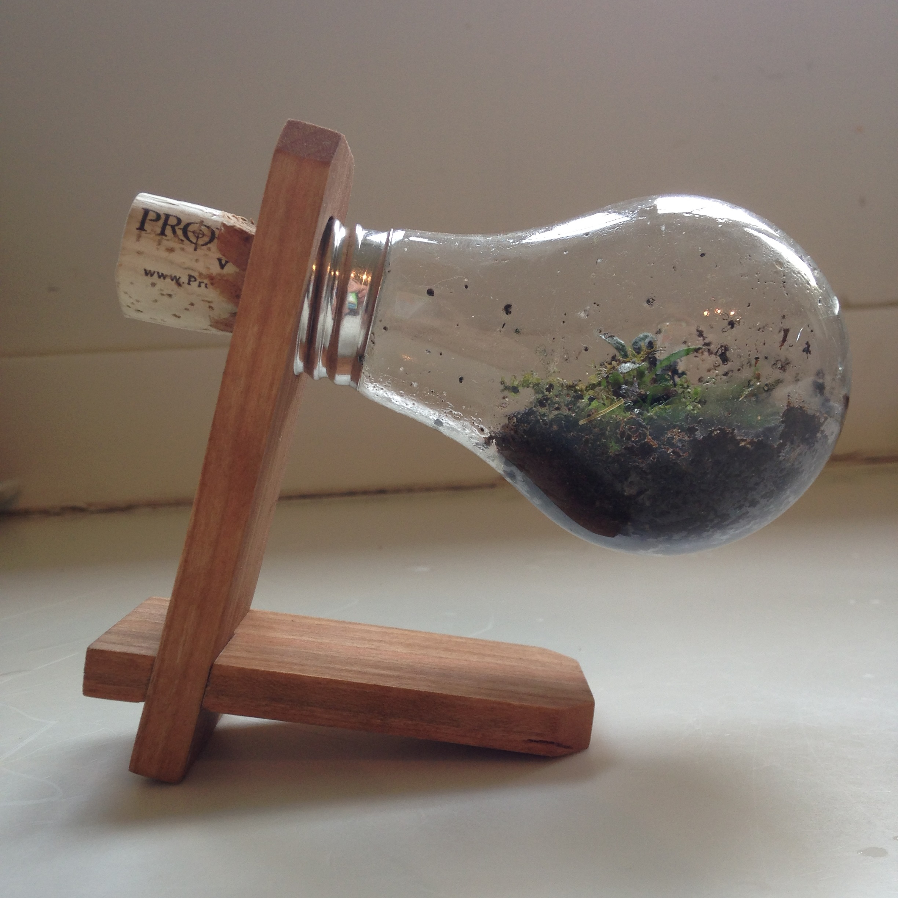

This was a really simple project based on a picture I saw of some really nive plants growing in a lightbulb. I thought I could try something similar so I made a little stand for the lightbulb out of the wood. The two pieces fit together the same way that my chess pieces do only the cuts are made at an angle. I think it turned out pretty well and I'm interested in improving the design. I'm not sure I like the look of the proken corners on the top piece, but so far I don't have any better ideas for shape. I just don't think the trapezoidal wood really fits with the shape of the lightbulb. The hardest part was making the hole because I don't have a forstner bit so I had to carve it out with a knife.
So far I've tried growing plants in it twice and they both died. Maybe I sould turn this into a gift for someonw with a greener thumb.